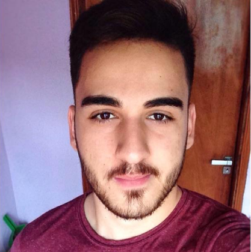

Daniel de Leon Bailo da Silva
Atualmente é estudante universitário do curso de Ciência da Computação onde é pesquisador/bolsista da Universidade Federal de Mato Grosso do Sul no projeto de extensão GIRA (Grupo de Interação Robótica e Acessibilidade) da Fronteira e pesquisador/voluntário da Universidade Federal de Mato Grosso do Sul em outros projetos de pesquisa, ensino e extensão como o PET-Fronteira. Tem interesse na área de Ciência da Computação, com ênfase em Ciência de Dados, Inteligência Artificial e Linguagens de Programação.
Identificação
Nome:
- Daniel de Leon Bailo da Silva
Nome em citações bibliográficas:
- DANIEL, L. B. S.;BAILO, D. L. S.;SILVA, D. L. B.;BAILO, DANIEL
Endereço
Endereço Profissional
- Universidade Federal de Mato Grosso do Sul, Reitoria da Universidade Federal de Mato Grosso do Sul, UFMS - Campus de Ponta Porã.
- Rua Itiberé Vieira
- Residencial Júlia de Oliveira Cardinal
- 79907414 - Ponta Porã, MS - Brasil
- Telefone: (67) 34371710
- URL da Homepage: https://cppp.ufms.br/
Formação acadêmica/titulação
2017
- Graduação em andamento em Ciência da Computação.
- Universidade Federal de Mato Grosso do Sul, UFMS, Brasil.
2014 - 2016
- Ensino Médio (2º grau).
- Colégio Alternativo Anglo, ALTERNATIVO, Brasil.
Formação Complementar
2018 - 2018
- Minicurso: Introdução a Sist. de E/S e Armazen. Paralelos. (Carga horária: 3h).
- Universidade Presbiteriana Mackenzie, MACKENZIE, Brasil.
2017 - 2017
- Minicurso Básico de Desenvolvimento Android. (Carga horária: 20h).
- Universidade Federal de Mato Grosso do Sul, UFMS, Brasil.
Atuação Profissional
Universidade Federal de Mato Grosso do Sul, UFMS, Brasil.Vínculo institucional
2018 - Atual
- Vínculo: Colaborador, Enquadramento Funcional: Pesquisador/Voluntário, Carga horária: 20
Outras informações
- O Programa de Educação Tutorial (PET) tem como objetivo contribuir para a melhoria dos cursos de graduação por meio do estabelecimento de grupos de 12 estudantes bolsistas e, opcionalmente, até 6 estudantes colaboradores voluntários que, tutorados por um professor doutor, desenvolvem atividades de ensino, pesquisa e extensão universitária. Trata-se de um Programa do Governo Federal, gerenciado pelo Ministério da Educação (MEC), que se estabelece em universidades públicas e privadas, em todas as áreas de conhecimento.
Vínculo institucional
2018 - Atual
- Vínculo: Bolsista, Enquadramento Funcional: Pesquisador/Bolsista, Carga horária: 20
Outras informações
- O GIRA (Grupo de Interação Robótica e Acessibilidade) da Fronteira é um projeto de extensão e pesquisa que realiza atividades com professores e estudantes da educação básica para despertar o interesse na área de IHC (Interação Humano ? Computador). Em 2018 o projeto caminha para seu ano II, mais consolidado. O GIRA é coordenado pelo professor Dr. Anderson Corrêa de Lima do CPPP. O grupo incentiva estudantes de graduação do Câmpus de Ponta Porã (CPPP) da UFMS a produzirem softwares educacionais que considerem aspectos importantes de interface de sistemas, com a finalidade de torná-las mais agradáveis e acessíveis aos usuários. Os temas de pesquisa do grupo são: Interação Criança-Computador, Informática na Educação, Desenvolvimento de Software Centrado no Usuário, Acessibilidade na Web , Robótica Pedagógica e Educação em Computação
Vínculo institucional
2018 - 2018
- Vínculo: Bolsista, Enquadramento Funcional: Monitor de Matemática Discreta, Carga horária: 12
Outras informações
- A Monitoria de Ensino de Graduação incentiva a participação dos acadêmicos em atividades de ensino de graduação; o fortalecimento da articulação entre a teoria e a prática; a promoção da integração curricular e da cooperação entre discentes e docentes; o estímulo aos acadêmicos para que se interessem pela docência; e propiciando aos acadêmicos, oportunidade para uma formação profissional qualificada.
Vínculo institucional
2018 - 2018
- Vínculo: Colaborador, Enquadramento Funcional: Voluntário, Carga horária: 2
Outras informações
- Desenvolver atividades de ensino de programação de maneira motivadora por meio de resolução de problemas olímpicos (OBI) com o objetivo de despertar o interesse por ciências da computação e identificar talentos.
Vínculo institucional
2017 - 2018
- Vínculo: Estagiário, Enquadramento Funcional: Técnico de Informática, Carga horária: 20
Outras informações
- Estagiário na Secretaria Municipal de Saúde de Ponta Porã por meio do CIEE. O Centro de Integração Empresa-Escola - CIEE é uma associação civil de direito privado, sem fins lucrativos e de fins não econômicos, reconhecida como entidade de assistência social que, por meio de diversos programas, dentre eles o de aprendizagem e o estágio de estudantes, possibilita aos adolescentes e jovens uma formação integral, ingressando-os ao mundo do trabalho.
Projetos de pesquisa
GIRA & EduCa
2017 - Atual
- Descrição: O design de tecnologia para as crianças tem recebido atenção redobrada durante os últimos anos. As crianças encontram e utilizam vários sistemas de software de forma ubíqua, sem que se deem conta: telefones celulares, jogos diversos, comunicadores na internet. As crianças estão formando uma população bastante experiente no uso dessas tecnologias, de maneira muito diferente das gerações de seus pais [Melo 2008]. Neste contexto, o campo de pesquisa em design de interação e desenvolvimento de ferramentas computacionais para o público infantil aponta ser bastante promissor. A área da Interação Criança-Computador (ICC) busca compreender este universo e direcionar da melhor forma possível o design de interação e o desenvolvimento de ferramentas computacionais focadas no público infantil. Além do desafio de construir aplicações educativas de ICC, que conquistem o público infantil, um desafio ainda maior e urgente é o de garantir a inclusão de crianças com necessidades especiais neste novo ambiente de aprendizado. A proposta deste projeto de pesquisa consiste do estudo sobre a teoria de ICC e da Acessibilidade na Web para produzir softwares educativos e inclusivos para crianças. Este projeto de pesquisa foi denominado GIRA & Educa (Grupo de Interação, Robótica, Acessibilidade & Educação). O GIRA & Educa é um projeto de pesquisa novo e em seu segundo ano irá fortalecer a pesquisa em áreas correlatas ao tema principal, são elas: a Informática na Educação e a Educação em Computação, pretende-se que os alunos e pesquisadores do projeto possam também enviar seu trabalhos de pesquisa para conferências nacionais destas áreas.
- Situação: Em andamento; Natureza: Pesquisa.
- Alunos envolvidos: Graduação: (20) / Doutorado: (4) .
- Integrantes: Daniel de Leon Bailo da Silva - Integrante / Dionísio Machado Leite Filho - Integrante / Wellington Marques de Aquino - Integrante / Anderson Corrêa de Lima - Coordenador / JOSE FILIPE ROZENO RODRIGUES - Integrante / Jorge Emilio da Costa Walder - Integrante / Plabiany Rodrigo Acosta - Integrante / Thiago Ramalho de Carvalho - Integrante / Caren Micheli Cardenas Rodrigues - Integrante / Nícolas Alves Cruz - Integrante / José Vieira dos Santos Neto - Integrante / Ana Claudia Dias - Integrante / Leandro Viana Martins - Integrante / Kacila Mello Flores - Integrante / Esteic Janaína Santos Batista - Integrante / Claudio Zarate Sanavria - Integrante / Amaury Antônio de Castro Junior - Integrante / Maria Luzia da Silva Santana - Integrante / Jessica Aparecida Mioto - Integrante / Leonardo Mauro Pereira Moraes - Integrante / Maira Daniele Cavalheiro - Integrante / Neemias Buceli da Silva - Integrante / Patricia Olartechea Veron - Integrante / Rômulo Petronilio Pereira Brandão - Integrante.
Projetos de extensão
Preparação para as olimpíadas de informática e matemática
2018 - 2018
- Descrição: As olimpíadas de matemática e as olimpíadas de informática são competições saudáveis, realizadas pelo Instituto de Matemática Pura e Aplicada (IMPA) e Instituto de Computação da Unicamp, que visam estimular o estudo da matemática e da computação além de revelar novos talentos na área. O presente projeto tem como objetivo principal incentivar a participação dos estudantes nestas competições. Este incentivo será feito por meio de estudos dirigidos, onde os estudantes são motivados a resolver problemas matemáticos e computacionais.
- Situação: Concluído; Natureza: Extensão.
- Alunos envolvidos: Graduação: (10) / Doutorado: (2) .
- Integrantes: Daniel de Leon Bailo da Silva - Integrante / Wellington Carlos de Jesus - Coordenador / Amanda Lopes Barreto - Integrante / Claudio Santos Oliveira - Integrante / Wellington Marques de Aquino - Integrante / Roberta Edileuza de Bazam - Integrante / Nádia Maria Veron Boeira - Integrante / Tatiane da Silva Alves - Integrante / Natália da Silva Siguemura - Integrante / Alex Sandro Mariani da Silva - Integrante / Elisangela da Silva Canete - Integrante / Anderson Corrêa de Lima - Integrante.
GIRA Fronteira: Grupo de Interação, Robótica e Acessibilidade da Fronteira
2018 - Atual
- Descrição: O design de tecnologia para as crianças e jovens tem recebido atenção redobrada durante os últimos anos. As criançase os adolescentes encontram e utilizam vários sistemas de software de forma ubíqua, sem que se deem conta: telefones celulares, jogos diversos, comunicadores na internet. As crianças estão formando uma população bastante experiente no uso dessas tecnologias, de maneira muito diferente das gerações de seus pais [Melo 2008]. Neste contexto, o campo de estudo de interação de crianças com ferramentas computacionais aponta ser bastante promissor. Em particular, a cada dia, novas aplicações pedagógicas para o ensino e aprendizagem de crianças estão sendo construídas e disponibilizadas. Entretanto, é preciso que o projeto destas ferramentas pedagógicas seja elaborado de forma a motivar o aprendizado e a garantir uma experiência amigável das crianças com a tecnologia. A área da Interação Criança Computador (ICC) busca compreender este universo, garantindo também a inclusão de crianças com necessidades educativas especiais neste novo ambiente de aprendizado. Neste contexto surgiu a proposta do projeto GIRA-FRONTEIRA (Grupo de Interação, Robótica e Acessibilidade da Fronteira) do CPPP-UFMS, com o objetivo de promover a extensão e a pesquisa sobre os temas de interação criança-computador, robótica- educacional e acessibilidade na internet. O projeto tem apoio de entidades públicas de suporte para a educação de ensino básico na cidade de Ponta Porã e de institutos federais parceiros. A UFMS em Ponta Porã já é bastante atuante. O projeto GIRA-Fronteira realizou em 2017 e pretende em 2018 oferecer a capacitação de professores sobre os temas apresentados, para que estes possam utilizar a tecnologia da melhor forma possível em sala de aula.
- Situação: Em andamento; Natureza: Extensão.
- Alunos envolvidos: Graduação: (43) / Doutorado: (11) .
- Integrantes: Daniel de Leon Bailo da Silva - Integrante / Wellington Carlos de Jesus - Integrante / Dionísio Machado Leite Filho - Integrante / Nádia Maria Veron Boeira - Integrante / Anderson Corrêa de Lima - Coordenador / JOAO CARLOS PELICON RAMOS - Integrante / Pedro Enrique Matos dos Santos - Integrante / AILTON JIMENEZ FERREIRA - Integrante / ISTELLA LIRA CONDER - Integrante / JOSE FILIPE ROZENO RODRIGUES - Integrante / QUESIA DE ARAUJO SANTOS - Integrante / Jorge Emilio da Costa Walder - Integrante / Plabiany Rodrigo Acosta - Integrante / Davi Emmanuel Carvalho Maia - Integrante / Ana Paula Rozeno Rodrigues - Integrante / Thiago Caetano Roth - Integrante / Elaine Cláudia de Arruda Soares Moraes - Integrante / Jose Luiz Almino - Integrante / Mikaela Recalde Marim Medina - Integrante / Vinnicius Magalhães Stein Cezar - Integrante / Vinicius Nunes Martins - Integrante / Patrick Perosa - Integrante / Elisângela Silva da Cunha Rodrigues - Integrante / Maria Elena Aquino Dutra - Integrante / Miriam Cristina Fleitas - Integrante / Thiago Ramalho de Carvalho - Integrante / Fabrício Augusto Rodrigues - Integrante / Brenda Medina de Oliveira - Integrante / Eliezer Martins Dias - Integrante / Gislaine Escobar Barboza - Integrante / Mateus Soares Moraes - Integrante / Jeferson Moraes Dutra - Integrante / Jonatas Yoshito Katayama Fernandes - Integrante / João Vítor Matos dos Santos - Integrante / Andreia Alfonso Larrea - Integrante / Igor dos Santos Almino - Integrante / Felipe Lyra Sabino - Integrante / Evandro Amorim Santana - Integrante / Caren Micheli Cardenas Rodrigues - Integrante / Nícolas Alves Cruz - Integrante / José Vieira dos Santos Neto - Integrante / Ana Claudia Dias - Integrante / Joao Emanuel Olmedo Neves - Integrante / Leandro Viana Martins - Integrante / Kacila Mello Flores - Integrante / Vinicius Vieira Kadar - Integrante / Esteic Janaína Santos Batista - Integrante / Claudio Zarate Sanavria - Integrante / Amaury Antônio de Castro Junior - Integrante / Claudia Carreira da Rosa - Integrante / Maria Luzia da Silva Santana - Integrante / Maria Istela Cagnin Machado - Integrante / Evandro Luís Souza Falleiros - Integrante / Jonathan de Andrade Silva - Integrante.
A UFMS e a Prefeitura de Ponta Porã em Atuação para a Integração das TIC's(Tecnologias Educacionais e da Comunicação) nas Escolas de Ponta Porã
2018 - Atual
- Descrição: A informática na educação infantil tem recebido atenção redobrada durante os últimos anos. As crianças encontram e utilizam vários sistemas de software de forma ubíqua, sem que se deem conta: telefones celulares, jogos diversos, comunicadores na internet. As crianças estão formando uma população bastante experiente no uso dessas tecnologias, de maneira muito diferente das gerações de seus pais [Melo 2008]. Em particular, a cada dia, novas aplicações pedagógicas para o ensino e aprendizagem de crianças estão sendo construídas e disponibilizadas. Neste contexto, surgiu a proposta deste projeto intitulado: 'A UFMS e a Prefeitura de Ponta Porã em Atuação para a Integração das TIC's (Tecnologias Educacionais e da Comunicação) nas Escolas de Ponta Porã' do CPPP-UFMS'. O projeto tem como objetivo promover a extensão e a pesquisa na escolas públicas do município de Ponta Porã, com a atuação de docentes, discentes e técnicos do Campus de Ponta Porã da UFMS. O projeto tem apoio de entidades públicas e administrativas da pasta de educação da cidade de Ponta Porã. O projeto pretende realizar a capacitação de professores e alunos para que estes possam utilizar a tecnologia atual, que é bastante diversa, da melhor forma possível em sala de aula. Este projeto é multidisciplinar e contempla em suas ações os quatro Cursos do Campus de Ponta Porã. O projeto irá abordar as seguintes áreas: Informática na Educação, Educação Matemática, Raciocínio Lógico, Educação em Computação, Softwares Educacionais, Robótica pedagógica, Pensamento Computacional, entre outras, que fazem parte da grade curricular dos quatro cursos do Campus.
- Situação: Em andamento; Natureza: Extensão.
- Alunos envolvidos: Graduação: (3) / Doutorado: (10) .
- Integrantes: Daniel de Leon Bailo da Silva - Integrante / Wellington Carlos de Jesus - Integrante / Dionísio Machado Leite Filho - Integrante / Wellington Marques de Aquino - Integrante / Anderson Corrêa de Lima - Coordenador / Jorge Emilio da Costa Walder - Integrante / Elaine Cláudia de Arruda Soares Moraes - Integrante / Amaury Antônio de Castro Junior - Integrante / Claudia Carreira da Rosa - Integrante / Maria Luzia da Silva Santana - Integrante / Jonathan de Andrade Silva - Integrante / Lauro Maycon Fernandes Ferreira - Integrante / Reginaldo Merejolli - Integrante / Rita de Fátima da Silva - Integrante / Tchaila Regina Santino Tomascheski - Integrante / Guilherme Roberti Omine - Integrante.
Outros Projetos
Programa de Educação Tutorial (PET)
2018 - Atual
- Descrição: O Programa de Educação Tutorial (PET) é desenvolvido por grupos de acadêmicos com a tutoria de um docente do curso de graduação e atuação de maneira integrada entre si com os demais acadêmicos do curso e sua coordenação, contribuindo para a melhoria dos cursos, por meio da realização de atividades de ensino, de pesquisa e de extensão, que tenham por objetivos desenvolver atividades acadêmicas com padrão de excelência, mediante grupos de aprendizagem tutorial de natureza coletiva e interdisciplinar, contribuir para a elevação da qualidade da formação acadêmica dos alunos de graduação, estimular a formação de profissionais e docentes com elevada qualificação técnica, científica, tecnológica e acadêmica, formular novas estratégias de desenvolvimento e modernização do ensino superior no País, estimular o espírito crítico, bem como a formação para atuação profissional pautada pela cidadania e pela responsabilidade social, introduzir novas práticas pedagógicas na graduação, contribuir para a consolidação e difusão da educação tutorial como prática de formação na graduação e contribuir com a política de diversidade na Instituição de Ensino Superior - IES, por meio de ações afirmativas em defesa da equidade socioeconômica, étnico-racial e de gênero.
- Situação: Em andamento; Natureza: Outra.
- Alunos envolvidos: Graduação: (18) / Doutorado: (1) .
- Integrantes: Daniel de Leon Bailo da Silva - Integrante / Dionísio Machado Leite Filho - Coordenador / Wellington Marques de Aquino - Integrante / Nádia Maria Veron Boeira - Integrante / BRUNO HENRIQUE GLOWASKI MORAIS - Integrante / JOAO CARLOS PELICON RAMOS - Integrante / CAIO ALVES DA SILVA - Integrante / Pedro Enrique Matos dos Santos - Integrante / AILTON JIMENEZ FERREIRA - Integrante / ISTELLA LIRA CONDER - Integrante / JOSE FILIPE ROZENO RODRIGUES - Integrante / CLAUDIO SANTOS OLIVEIRA - Integrante / PEDRO HENRIQUE PELICON RAMOS - Integrante / DIEGO LUIZ NUNEZ GONCALVES - Integrante / BEATRIZ CAMARGO CAMARA - Integrante / JOAO PEDRO GALINA - Integrante / LUIZ ALCINDO DUTRA VILLA RUEL - Integrante / WAGNER FERREIRA RUSTH - Integrante / QUESIA DE ARAUJO SANTOS - Integrante.
Áreas de atuação
- Grande área: Ciências Exatas e da Terra / Área: Ciência da Computação / Subárea: Ciência de Dados.
- Grande área: Ciências Exatas e da Terra / Área: Ciência da Computação / Subárea: Banco de Dados.
- Grande área: Ciências Exatas e da Terra / Área: Ciência da Computação / Subárea: Linguagens de Programação.
Idiomas
Inglês
- Compreende Razoavelmente, Fala Razoavelmente, Lê Bem, Escreve Bem.
Produções
Produção bibliográficaTrabalhos completos publicados em anais de congressos
- [DOI] LIMA, ANDERSON CORRÊA DE ; CARVALHO, THIAGO ; BAILO, DANIEL ; RODRIGUES, JOSÉ FILIPE ROZENO ; AQUINO, WELLINGTON MARQUES DE ; ACOSTA, PLABIANY . Uma Oficina para Ensino de Algoritmos Paralelos por Meio de Computação Desplugada. In: VII Congresso Brasileiro de Informática na Educação, 2018, Fortaleza, 2018. p. 619-628.
- [DOI] FILIPE ROZENO RODRIGUES, JOSE ; RODRIGO ACOSTA, PLABIANY ; RAMALHO, THIAGO ; MARQUES DE AQUINO, WELLINGTON ; CORREA DE LIMA, ANDERSON ; BAILO, DANIEL . Parallel Computing: Unplugging to Learn. In: 2018 XIII Latin American Conference on Learning Technologies (LACLO), 2018, São Paulo. 2018 XIII Latin American Conference on Learning Technologies (LACLO), 2018. p. 41.
- BAILO, D. L. S..Introdução ao LaTeX: de aluno para aluno. 2019. (Curso de curta duração ministrado/Outra).
Eventos
Participação em eventos, congressos, exposições e feiras- IntegraUFMS 2018. Uma estrutura baseada em hash table para a triangulação de Delaunay. 2018. (Exposição).
- XIII Conferência Latino-americana de Tecnologias de Aprendizagem - LACLO. Parallel Computing: Unplugging to Learn. 2018. (Exposição).
- XIX Simpósio em Sistemas Computacionais de Alto Desempenho (WSCAD 2018). 2018. (Simpósio).
- DANIEL, L. B. S.IV Robo Ára. 2018. (Exposição).